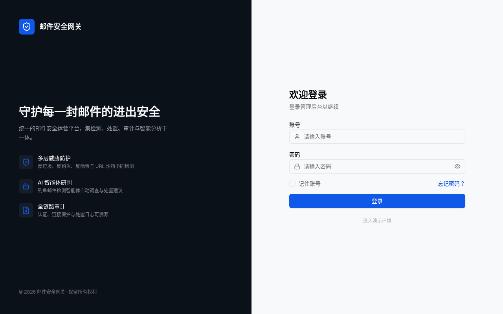
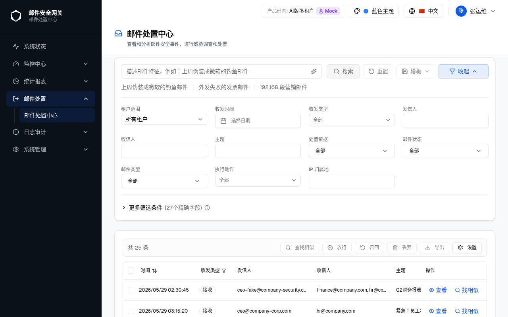
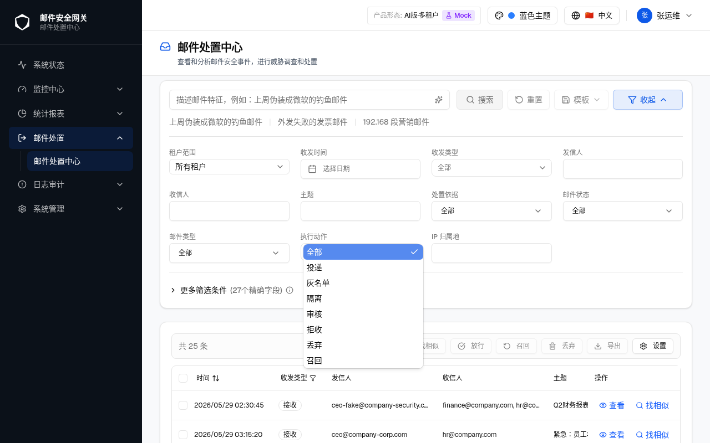
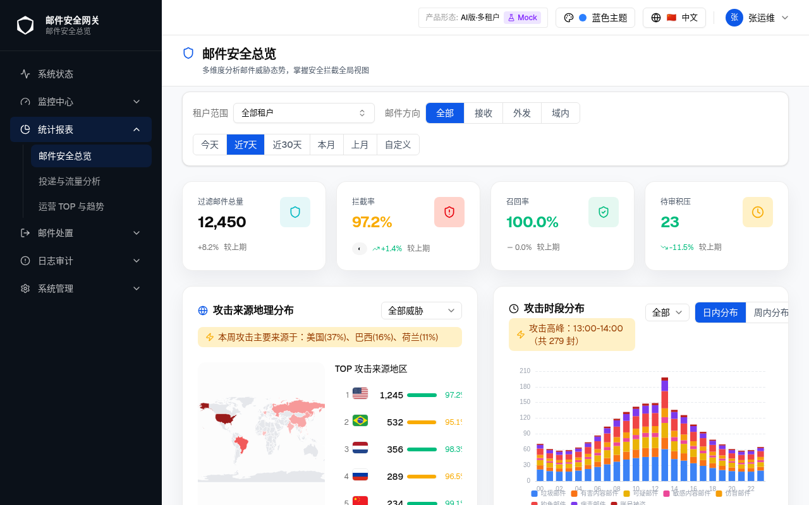
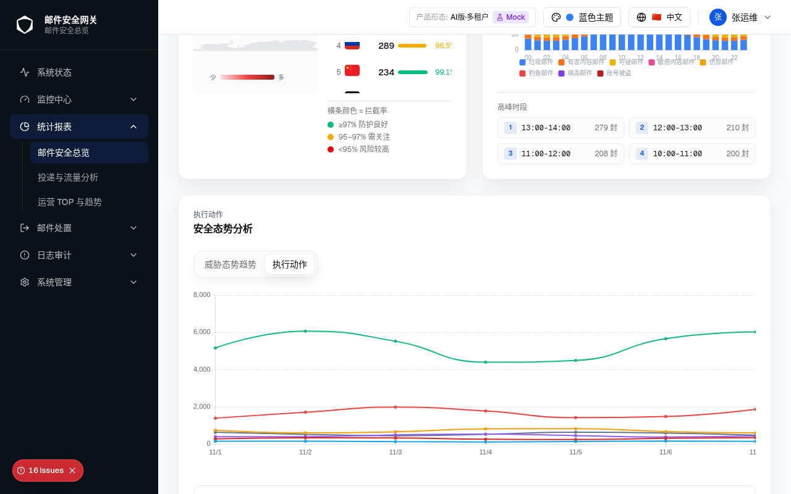
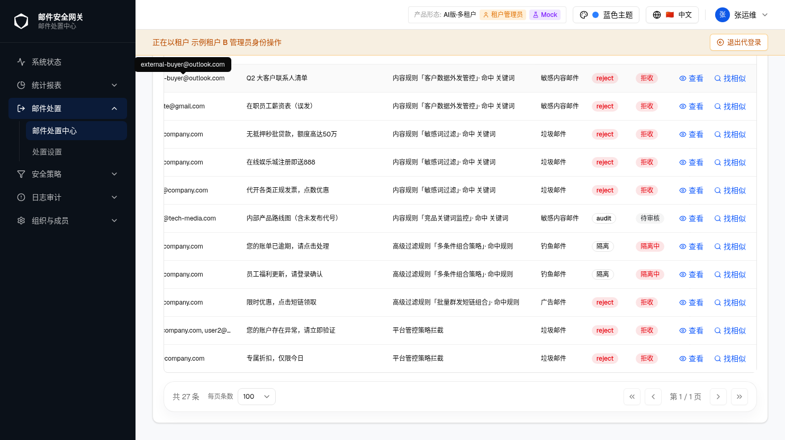
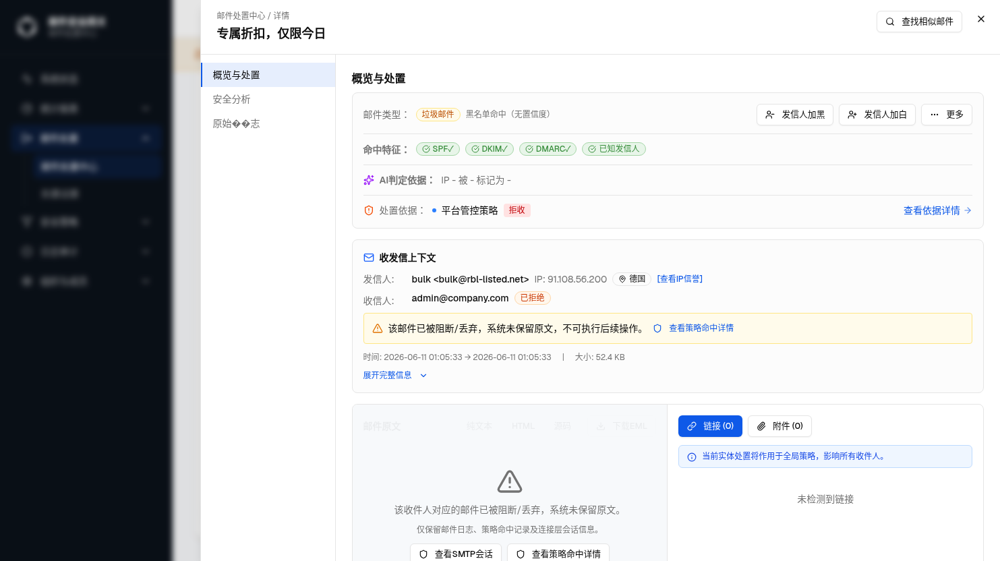
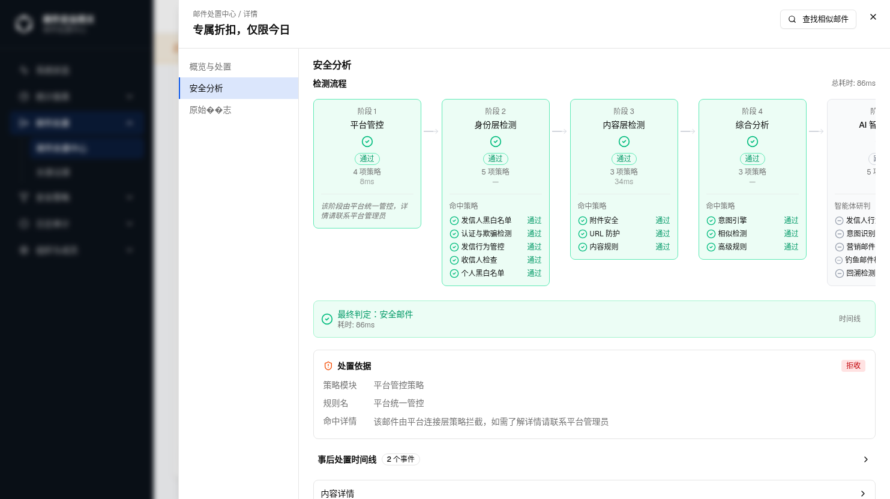
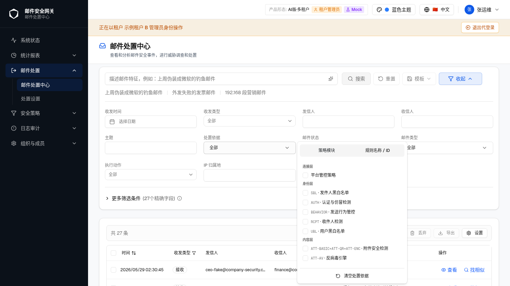

关联模块：侧边菜单栏 · 邮件处置中心 · 邮件安全总览 ·
变更类型：功能移除 / 功能变更 ·
最后更新：2026-07-30 ·
webapp commit：c481bf6（基线）
| 字段 | 内容 |
|---|---|
| 规格类型 | 增量规格（Incremental）· 多变更点格式 |
| 当前版本 | v4 |
| 生成日期 | 2026-07-30 |
| webapp commit | c481bf6（基线） |
| 对照 spec commit | not-used |
| 历史对话记录 | 当前上下文已提供（完整修复描述、bug 报告及代码变更记录） |
| 事实源优先级 | 1. 用户当前描述；2. 运行中 webapp 浏览器真实截图；3. webapp 源码 |
| 浏览器验证状态 | 变更 1 S-1 前态：2026-07-28 QC 只读复查；变更 2/3/4：2026-07-30 演示环境真实截图（已完成） |
| 功能 / 元素 | 变更 | AI-单 平台管理员 |
传统-单 平台管理员 |
云-多 平台管理员 |
云-多 租户管理员 |
AI-多 平台管理员 |
AI-多 租户管理员 |
传统-多 平台管理员 |
传统-多 租户管理员 |
|---|---|---|---|---|---|---|---|---|---|
| #1 | ❌ | ❌ | ❌ | ❌ | ❌ | ❌ | ❌ | ❌ | |
| #2 | ❌ | ❌ | ❌ | ❌ | ❌ | ❌ | ❌ | ❌ | |
| #3 | ❌ | ❌ | ❌ | ❌ | ❌ | ❌ | ❌ | ❌ | |
| GT-12655 处置依据显示 · 列表列"处置依据"文案 | #4 | ✅ 原文 | ✅ 原文 | ✅ 原文 | 🔒 平台管控策略 | ✅ 原文 | 🔒 平台管控策略 | ✅ 原文 | 🔒 平台管控策略 |
| GT-12655 处置依据显示 · 详情弹窗概览与处置卡 · 策略模块名 | #4 | ✅ 原文 | ✅ 原文 | ✅ 原文 | 🔒 平台管控策略 | ✅ 原文 | 🔒 平台管控策略 | ✅ 原文 | 🔒 平台管控策略 |
| GT-12655 处置依据显示 · 详情弹窗安全分析 · 阶段1卡片标题 | #4 | ✅ 连接层检测 | ✅ 连接层检测 | ✅ 连接层检测 | 🔒 平台管控 | ✅ 连接层检测 | 🔒 平台管控 | ✅ 连接层检测 | 🔒 平台管控 |
| GT-12655 处置依据显示 · 详情弹窗安全分析 · 阶段1命中策略明细 | #4 | ✅ 策略列表 | ✅ 策略列表 | ✅ 策略列表 | 🔒 平台统一管控说明文字 | ✅ 策略列表 | 🔒 平台统一管控说明文字 | ✅ 策略列表 | 🔒 平台统一管控说明文字 |
| GT-12655 处置依据显示 · 筛选器"处置依据"下拉 · 连接层策略选项 | #4 | ✅ 各策略可勾选 | ✅ 各策略可勾选 | ✅ 各策略可勾选 | ✅ 折叠为"平台管控策略"可勾选 | ✅ 各策略可勾选 | ✅ 折叠为"平台管控策略"可勾选 | ✅ 各策略可勾选 | ✅ 折叠为"平台管控策略"可勾选 |
c481bf6 中移除，所有产品形态 / 角色均不再渲染。
| 项目 | 内容 |
|---|---|
| 问题 | 侧边栏底部显示「版本 c70d71c+dirty」，与 component-sidebar-nav html_spec（active 状态，仅 Logo 区 + 导航区域）不符 |
| QC 复查日期 | 2026-07-28（只读，/zh/dashboard，平台管理员） |
| 复查发现 | DOM 中 app-version-footer count=1；悬停 title 含完整 rev/built/build_tag |
| 修复 | 从 sidebar-nav.tsx 删除 <VersionFooter /> 及其 import；组件文件本身保留（待 GT-11459） |
触发路径：登录后台（平台管理员）→ /zh/dashboard → 查看左侧侧边栏底部
./screenshots/S-1-sidebar-version-footer-before.png
| 属性 | 值 |
|---|---|
| data-testid | app-version-footer |
| 可见文本 | 版本 c70d71c+dirty |
| 悬停 title | rev=c70d71c…+dirty built=… build_tag=opengauss |
| 位置 | 侧边栏最底部，border-t border-white/8 分隔线下方 |
| 当前状态 | 已失效commit c481bf6 后不再渲染 |
触发路径：登录后台（平台管理员）→ /zh/dashboard → 查看左侧侧边栏

| 属性 | 值 |
|---|---|
| [data-testid="app-version-footer"] | DOM 中不存在（count = 0） |
| 侧边栏底部可见元素 | 无额外内容；导航列表末尾无分隔线、无脚注 |
| 符合 html_spec | 是（component-sidebar-nav active 状态：Logo 区 + 导航区域） |
[data-testid="app-version-footer"] count = 0，侧边栏底部无分隔线或文字。| 元素 | 原位置 | 原可见条件 | 当前状态 |
|---|---|---|---|
| 侧边栏底部分隔线下方 | /version 接口正常 | 已移除 | |
| 版本号末尾 | modified === true | 已移除 | |
| VersionFooter 容器 | 鼠标悬停 | 已移除 | |
| VersionFooter 容器顶部 | 始终 | 已移除 |
| 接口 | 原用途 | 当前状态 |
|---|---|---|
GET /version |
获取 rev / built / modified / build_tag | SidebarNav 中不再调用；接口本身及组件文件保留，待 GT-11459 |
mark_deliver）选项。共享常量 EXECUTION_ACTIONS 本身不变，仅在 quick-filters.tsx 层面过滤。
触发路径：/zh/email-disposal/center → 页面加载完成 → 查看搜索条件区域

| 属性 | 值 |
|---|---|
| 执行动作字段位置 | 搜索条件第三行左侧，标签"执行动作"，combobox 类型 |
| 默认显示值 | 全部 |
| 可选项（当前） | 全部 / 投递 / 灰名单 / 隔离 / 审核 / 拒收 / 丢弃 / 召回 |
| "标记投递" | 已移除下拉列表中不再出现 |
触发路径：S-4 基础上 → 点击"执行动作"下拉框 → 展开选项列表

| 选项序号 | 选项文本 | 是否保留 |
|---|---|---|
| 1 | 全部 | 保留 |
| 2 | 投递 | 保留 |
| 3 | 灰名单 | 保留 |
| 4 | 隔离 | 保留 |
| 5 | 审核 | 保留 |
| 6 | 拒收 | 保留 |
| 7 | 丢弃 | 保留 |
| 8 | 召回 | 保留 |
| — | 已移除 |
| 元素 | 字段 key | 变更前 | 变更后 | 修改位置 |
|---|---|---|---|---|
mark_deliver |
出现在"执行动作"下拉列表中 | 已移除 | quick-filters.tsx 中 EXECUTION_ACTIONS.filter(a => a !== 'mark_deliver') |
|
| EXECUTION_ACTIONS 常量 | — | 含 mark_deliver |
不变（仅前端过滤）安全总览图表及其他引用处不受影响 | src/types/email-disposal.ts（未修改） |
mark_deliver（标记投递）折线。其他视图（威胁类型、投递结果等）的折线系列不受影响。
触发路径：/zh/statistics/security-overview → 页面加载完成

触发路径：S-6 基础上 → 向下滚动至"安全态势分析"区块 → 点击"执行动作" tab

| 属性 | 值 |
|---|---|
| 图表标题 | 执行动作 · 安全态势分析 |
| 当前激活 tab | 执行动作（蓝色背景） |
| 折线系列（保留） | 投递、灰名单、隔离、审核、拒收、丢弃、召回等（具体以图表图例为准） |
| 已移除图表中不再渲染此系列 | |
| 其他视图影响 | 无（威胁态势趋势 tab 等不受影响） |
| 元素 | 变更前 | 变更后 | 修改位置 |
|---|---|---|---|
| 存在于"执行动作"tab 图表中 | 已移除 | TrendChartCard.tsx useMemo keys 过滤逻辑：viewBy === 'action' && k === 'mark_deliver' 时 return false |
|
| 其他 viewBy 的 keys 生成 | 不过滤 | 不变 | — |
| 触发条件 | 说明 |
|---|---|
| 产品形态 | 云网关-多租户 / AI版-多租户 / 传统版-多租户（capabilities.multiTenant === true） |
| 登录视角 | 租户管理员（viewer === 'tenant'） |
| 处置依据策略 | 阶段1（连接层）策略：IPFREQ / IPBL / RBL / OVERSEAS（isStage1Policy(policy_key) === true） |
| 不触发条件 | 单租户形态；平台管理员视角；阶段2~5 策略 |
触发路径：切换产品形态为"AI版·多租户" → 登录视角切换为"租户管理员"（示例租户 B）→ 邮件处置中心列表页 → 滚动至列表末尾 → 横向滚动至"处置依据"列 → 观察 MIC026（您的账户存在异常）和 MIC027（专属折扣，仅限今日）行

| 元素 | 平台管理员视角（原文） | 多租户租户管理员视角（变更后） |
|---|---|---|
| 处置依据列文案 | RBL 过滤 · RBL黑名单命中（策略模块 · 规则名） |
平台管控策略拦截（固定文案，i18n key：emailDisposal.detail.features.platformPolicyListReason） |
| Tooltip 内容 | 同列文案 | 该邮件由平台连接层策略拦截，如需了解详情请联系平台管理员（i18n key：platformPolicyHitDetail） |
触发路径：邮件处置中心列表 → 点击 MIC027（专属折扣，仅限今日）行 → 弹窗打开 → 默认显示"概览与处置"标签页 → 观察"处置依据"行

| 元素 | 平台管理员视角（原文） | 多租户租户管理员视角（变更后） |
|---|---|---|
| 策略模块名 | RBL 过滤（含阶段色点） | 平台管控策略（无色点；i18n key：platformPolicyModule） |
| 规则名 / ID | RBL黑名单命中（RBL-023） | 平台统一管控（i18n key：platformPolicyRuleName） |
| 命中详情 | 具体命中信息 | 该邮件由平台连接层策略拦截，如需了解详情请联系平台管理员（i18n key：platformPolicyHitDetail） |
| 检测标签 | 显示 | 隐藏（不渲染） |
| "前往策略配置页"链接 | 显示 | 隐藏（不渲染） |
| 动作徽标（拒收 / 隔离等） | 显示 | 保留（不变） |
触发路径：邮件处置中心 → 点击 MIC027（专属折扣，仅限今日）行 → 弹窗打开 → 切至"安全分析"标签页 → 观察"检测流程"区阶段1卡片

| 元素 | 平台管理员视角（原文） | 多租户租户管理员视角（变更后） |
|---|---|---|
| 阶段1卡片标题 | 阶段 1 · 连接层检测 | 阶段 1 · 平台管控（i18n key：emailDisposal.detail.analysis.stageName.connectionPlatform） |
| 结果徽标 | 通过 / 拦截 | 保留（不变） |
| 策略项数 / 耗时 | 4 项策略 · 8ms | 保留（不变） |
| 命中策略明细列表 | IP频率限制、IP过滤、RBL过滤、海外邮件检测（各含状态标记） | 灰色斜体文字：「该阶段由平台统一管控，详情请联系平台管理员」（i18n key：platformStageHint） |
| 阶段2~5 卡片 | 正常显示 | 不变 |
触发路径：邮件处置中心列表页 → 点击"处置依据"筛选下拉 → 展开弹层 → 观察"连接层"分组

| 元素 | 平台管理员视角（原文） | 多租户租户管理员视角（变更后） |
|---|---|---|
| 连接层分组标题 | 连接层 | 保留（不变） |
| 连接层各模块条目 | IPFREQ·IP频率限制、IPBL·IP黑白名单、RBL·RBL过滤、OVERSEAS·境外邮件（各可独立勾选） | 折叠为单条「平台管控策略」可勾选条目（Checkbox + 文案，i18n key：emailDisposal.platformManagedPolicy） |
| 勾选"平台管控策略"的筛选效果 | — | 等同于勾选全部阶段1 policy_key（IPFREQ / IPBL / RBL / OVERSEAS）；取消勾选时全部移除 |
| 身份层 / 内容层等其他分组 | 正常可勾选 | 不变 |
| 展示点 | 组件 | 触发条件 | 平台管理员 / 单租户 | 多租户租户管理员 | i18n key |
|---|---|---|---|---|---|
| 列表列文案 | mail-list-table.tsx |
isStage1Policy(policy_key) |
原始策略模块 · 规则名 | 平台管控策略拦截 | platformPolicyListReason |
| 列表列 Tooltip | mail-list-table.tsx |
同上 | 同列文案 | 完整引导说明 | platformPolicyHitDetail |
| 概览与处置卡 · 策略模块名 | threat-summary-card.tsx |
同上 | RBL 过滤（含阶段色点） | 平台管控策略（无色点） | platformPolicyModule |
| 安全分析详情区 · 策略模块名 | analysis-section.tsx |
同上 | 原始模块名 | 平台管控策略 | platformPolicyModule |
| 安全分析详情区 · 规则名 | analysis-section.tsx |
同上 | RBL黑名单命中（RBL-023） | 平台统一管控 | platformPolicyRuleName |
| 安全分析详情区 · 命中详情 | analysis-section.tsx |
同上 | 具体命中信息 | 引导说明 | platformPolicyHitDetail |
| 检测流程 · 阶段1卡片标题 | analysis-section.tsx |
isPlatformPolicyContext && st.stage === 1 |
连接层检测 | 平台管控 | stageName.connectionPlatform |
| 检测流程 · 阶段1命中策略明细 | analysis-section.tsx |
同上 | 策略列表（含状态标记） | 灰色斜体说明文字 | platformStageHint |
| 筛选器处置依据 · 连接层条目 | quick-filters.tsx |
hidePlatformStage && stage === 1 |
4 条独立可勾选项 | 折叠为单条"平台管控策略"可勾选项 | platformManagedPolicy |
isStage1Policy(policy_key)（disposal-basis-config.ts 导出）和
useProductForm() 的 viewer / capabilities.multiTenant 共同决定，
无需在各组件中重复维护阶段1 key 列表。
| 编号 | 变更 | 描述 | 状态 | 复核日期 | 验证依据 | 处理说明 |
|---|---|---|---|---|---|---|
| D-1 | #1 | 变更前 SidebarNav 底部渲染 VersionFooter，与 component-sidebar-nav html_spec（active 状态：Logo 区 + 导航区域）不符。 | 已解决 | 2026-07-30 | 源码：commit c481bf6 删除 VersionFooter；QC 复查：2026-07-28 浏览器 count=1。 | 已在 commit c481bf6 中解决；GT-11459 保留组件文件待产品确认合规入口。 |
| D-2 | #1 | S-1（变更前）截图为 QC 只读复查记录，尚未归档至 screenshots/S-1-…。 |
未解决 | 2026-07-30 | — | 需将 QC 2026-07-28 截图归档为 ./screenshots/S-1-sidebar-version-footer-before.png。 |
| D-3 | #2 | 处置中心"执行动作"筛选包含不应对用户开放的"标记投递"选项，与安全总览图表的 series 数据不对称。 | 已解决 | 2026-07-30 | 源码：quick-filters.tsx 添加 .filter(a !== 'mark_deliver')；浏览器截图 S-5 已验证下拉无此项。 |
已在 quick-filters.tsx 层面过滤；共享常量不变，安全总览侧需同步处理（见 D-4）。 |
| D-4 | #3 | 安全总览执行动作图表包含 mark_deliver 折线，与处置中心筛选项不一致（均应不展示标记投递）。 | 已解决 | 2026-07-30 | 源码：TrendChartCard.tsx useMemo 在 viewBy === 'action' 时过滤 mark_deliver；浏览器截图 S-7 已验证。 |
已在 TrendChartCard.tsx 中修复，其他 viewBy 不受影响。 |
| D-5 | #4 | GT-12655 变更4涉及的 S-8（列表列）、S-9（概览与处置卡）、S-10（安全分析阶段1卡片）、S-11（筛选器下拉）四个专项状态截图已通过浏览器自动化实拍并归档。 | 已解决 | 2026-07-30 | 源码：agent-browser 在 AI版·多租户 · 租户管理员（示例租户 B）视角下实拍，截图已归档至 screenshots/S-8~S-11，规格中 img src 已同步替换。 |
无需后续操作。 |
| 编号 | 变更 | 问题 | 状态 | 备注 |
|---|---|---|---|---|
| Q-1 | #1 | GT-11459 要求的运行时版本查询能力，产品是否已确认符合 html_spec 的合规展示入口？若已确认，请提供入口路由和组件位置。 | 待确认 | 在产品给出明确入口前，VersionFooter 不应重新挂载至 SidebarNav 或未经规格定义的区域。 |
| Q-2 | #1 | S-1（变更前）QC 截图是否已在截图库中归档？若有请提供路径。 | 待确认 | 关联 D-2。 |
| Q-3 | #2/#3 | "标记投递"（mark_deliver）在产品上是否为永久下线，还是仅在当前版本隐藏？若为阶段性隐藏，需在 EXECUTION_ACTIONS 层面添加条件或注释。 |
待确认 | 当前实现为前端过滤，共享常量仍含该值；若永久下线，建议从常量中移除以避免误用。 |
| Q-4 | #4 | 多租户租户管理员视角下，筛选器"处置依据"下拉勾选"平台管控策略"后，后端查询是否支持传入全部阶段1 policy_key（IPFREQ / IPBL / RBL / OVERSEAS）作为 OR 筛选条件？当前前端实现为将四个 key 全部写入 disposalPolicyKeys，需确认后端接口是否有单次传入 key 数量上限。 |
待确认 | 关联 S-11。若后端有限制，需改为新增"平台连接层"聚合筛选 key 或由后端新增接口参数。 |
| 版本 | 日期 | 类型 | Ticket | Webapp commit | 摘要 |
|---|---|---|---|---|---|
| v1 | 2026-07-30 | 首次生成（增量） | GT-12649 | c481bf6 |
GT-12649 变更 #1：记录从 SidebarNav 移除 VersionFooter，包含 QC 复查记录（S-1 占位）和 S-2 变更后目标状态。 |
| v2 | 2026-07-30 | 增量更新 | GT-12649 | c481bf6 |
新增变更 #2（DevMode 变更规格独立分区）、#3（处置中心执行动作移除"标记投递"）、#4（安全总览执行动作图表移除"标记投递"）；重构文档为多变更点格式，补充真实浏览器截图 S-3 ~ S-7；新增差异 D-3/D-4/D-5，新增待确认 Q-3。 |
| v3 | 2026-07-30 | 增量更新 | GT-12655 | c481bf6 |
GT-12655：新增变更 #4，记录多租户租户管理员视角下处置依据阶段1策略全链路"平台管控策略"显示方案；涵盖列表列、详情概览卡、安全分析阶段1卡片、筛选器下拉共4个展示点；矩阵表新增 AI-多/传统-多租户管理员列；新增差异 D-5（截图待归档）、待确认 Q-4（后端筛选接口兼容性）。 |
| v4 | 2026-07-30 | 规范修复 | GT-12649 | c481bf6 |
按技能规范重写目录（每个需求点使用完整名称作为主入口，子章节使用编号层级 1.1/1.2/…/4.3，尾部三项以 C/D/E 字母编号）；变更总览标题修正为"共 4 项需求"；各变更区块 incr-header 补充路由路径；批量修复全部 UTF-8 replacement character 乱码（共 6 处）。 |